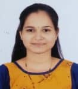
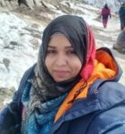
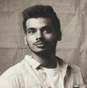
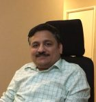
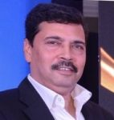
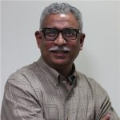
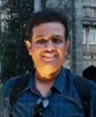
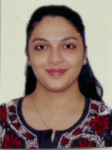

Student Testimonials
I am very proud to be part of RJ alumnus and grateful to the wonderful teachers of RJBT who mentored us because of where I am. The lab facilities which we received at even UG level was phenomenal. And at every stage of our education we received strong support and guidance.
I had a great experience studying at RJ. It gave me an opportunity to understand what I really want to do and how to get it.
RJ Biotech established an educational foundation for my career by providing domain expertise in biotechnology. RJ biotech provided excellent education, encouraged real-world experiences through workshops and internships and help was always available when needed. I very much admire the cognitive environment and skill-development opportunities I received at RJ biotech and helped to accomplish my educational and professional goals and build stepping stones for my career as a scientist.
RJ College is a reputed and well-renowned college for Biotechnology across India. Its strength is its strong faculty and their great zeal to mentor their students. Many passouts from this department are doing well in healthcare, research, and other domains. Like others, I too feel privileged that I was part of RJ College.
Faculty members were knowledgeable and provided the right level of guidance to ensure I was on the right path and had an enriching time during my college days.
“११ वीला कला शाखेत प्रवेश घेतला आणि इथली कधी झाले ते कळलंच नाही. शिकणं, अभ्यास करणं अंगात भिनलं ते इथेच. नियमित सगळ्या विषयांचे होणारे तास आणि तळमळीने शिकवणारे शिक्षक ही माझ्या महाविद्यालयातली फार महत्त्वाची बाब मला आजही वाटते. इथल्या सगळ्या आठवणी आजही मनात ताज्या आहेत.”
‘रामनिरंजन झुनझुनवाला महाविद्यालय’ आणि त्यातला ‘मराठी विभाग’ ह्या माझ्या आयुष्यातल्या अतिशय महत्त्वाच्या गोष्टी आहेत. शालेय शिक्षण मराठी माध्यमातून पूर्ण केलेल्या माझ्यासारख्या विद्यार्थ्यांना ह्या महाविद्यालयाने खूप चांगल्या पद्धतीने घडवले आहे.
२००५ साली रामनिरंजन झुनझुनवाला महाविद्यालयात मी प्रवेश घेतला. कला शाखेचा विद्यार्थी असल्याने मला नृत्य, अभिनय यासारख्या कलेत पारंगत होण्याची संधी मिळाली. मराठी विभागाच्या प्रमुखांच्या योग्य मार्गदर्शनामुळे मी उच्चशिक्षित झालो आणि आज विधी अधिकारी म्हणून कार्यरत आहे.
जेव्हा केव्हा मला एखाद्या महाविद्यालयाजवळून जाण्याचा प्रसंग येतो, तेव्हा तेव्हा मला माझ्या रामनिरंजन झुनझुनवाला महाविद्यालयाची आठवण येते. मी आज जर आयुष्यात यशस्वी झालो असेन तर हे केवळ मला इथे मिळालेल्या शिक्षणामुळेच.
महाविद्यालयाविषयीचा अनुभव एका वाक्यात सांगायचं तर “पुन्हा ते दिन येणे नाही” असंच मी म्हणेन. मी खरोखरीच स्वतःला भाग्यवान समजतो की मला असं कॉलेज, उत्कृष्ट शिक्षकवृंद गुरु स्थानी लाभले. तो काळ, ती माणसं माझ्यासाठी मला आयुष्यभर पुरेल एवढी ज्ञानाची, प्रेमाची शिदोरी आहेत हे नक्की.
मी बारावी सायन्स ची विद्यार्थिनी होते पण माझा लिखाणाकडे कल असल्यामुळे मी कलाशाखेत मराठी विषय घेतला होता. त्यामुळे अनेक साहित्यिक मला अभ्यासता आले. कॉलेजने मला खूप छान मित्र-मैत्रिणी दिले आणि झुनझुनवाला कॉलेजमध्ये माझं शिक्षण पूर्ण झालं हीच माझ्यासाठी अभिमानाची गोष्ट आहे.
मैं सुफिया शेख़, रामनिरंजन झुनझुनवाला महाविद्यालय में 2019 से 2021 एम.ए. हिंदी की छात्रा रही। प्राध्यापकों का निरंतर सहकार्य और पुस्तकालय की उत्तम सुविधा से मुझे हमेशा प्रेरणा मिली। आज मैं डॉन बॉस्को डेवलपमेंट सोसाइटी में हिन्दी अध्यापिका के रूप में कार्यरत हूं।

मैंने रामनिरंजन झुनझुनवाला महाविद्यालय से पोस्ट-ग्रेजुएशन किया। हिंदी विभाग ने मुझे जीवन में सक्रियता और प्रेरणा दी। आज मैं मदर तेरेसा विद्यालय में हिंदी अध्यापिका के रूप में कार्यरत हूं और अपने गुरूजनों की प्रेरणा से यह संभव हुआ।
मैं 2019 से 2021 तक इस महाविद्यालय की छात्रा रही। शिक्षकों से मिला सहयोग और प्रेरणा ने मेरे कैरियर की दिशा तय की। ऐसा हमारा महाविद्यालय परिवार है जहाँ शिक्षा के साथ संस्कार भी मिलते हैं।
मेरा इस महाविद्यालय के साथ 7 वर्षों का सफर रहा है। 11वीं से लेकर स्नातकोत्तर तक की पढ़ाई पूरी की। सकारात्मक वातावरण और सहायक शिक्षक-शिक्षिकाओं ने मेरे कौशल को विकसित करने के अनेक अवसर दिए।
मैं ज्योति कारंडे, रामनिरंजन झुनझुनवाला महाविद्यालय में वर्ष 2019 से 2021, एम.ए. हिंदी की छात्रा रही। मेरा अनुभव इस महाविद्यालय के साथ बहुत ही अच्छा रहा। कोविड-19 महामारी के दौरान भी पूर्ण सहकार्य मिला। आज मैं कोहिनूर इंटरनेशनल विद्यालय में हिंदी अध्यापिका के रूप में कार्यरत हूँ और इस महाविद्यालय की सदैव आभारी हूँ।
I became a part of RJ college in 2014 and stayed on for five long years. My professors and peers, especially from the English department, gave me direction and purpose. The MA English Literature course broadened my perspective on life and literature.
It gives me great pleasure to say with pride that I completed my MA from RJ College. The cordial relationship between faculty and students helped me excel both personally and professionally. The support from RJ faculty made it possible to manage work and study successfully.
My MA Literature journey at RJ College was transformative. Professors like Neeta Ma’am, Maria Ma’am, and Yogesh Sir brought literature to life. Their dedication and motivation inspired me both as a student and teacher.

Returning to academics after years was daunting, but the kindness and mentorship of Dr. Neeta and Maria Ma’am made it possible. The MA English program helped me regain confidence, build professionalism, and cherish lifelong learning.

My experience as a student at RJ College turned out to be the best. The guidance and warmth of my teachers inspired me to become an educator myself. I’ll always be thankful to Jhunjhunwala College and proud to be an alumnus.
I completed my B.Sc. Mathematics in 2000 from RJ College. The interpersonal skills and confidence gained here shaped my career and personal growth. I owe a lot of my success to the guidance of my teachers.

I entered RJ College on a wheelchair in 1989 and graduated with BSc Math in 1994. The guidance from my teachers built my confidence and helped me grow to an international level.
Graduating in Mathematics in 2000 from RJ College gave me the foundation for a global career. The professors’ guidance not only shaped my academics but also my personal and professional success.
RJ College provided an environment of warmth and guidance. The Department of Mathematics inspired me to pursue teaching as a career. I owe my professional growth to my alma mater.
I graduated from RJ College in 2003 with a B.Sc. Mathematics and earned a gold medal in my Masters. RJ nurtured my communication, adaptability, and empathy — qualities that shaped my teaching career.

Inspiring to see what Jhunjhunwala College and Dr. Usha Mukundan have done in the field of education, especially for students from very humble backgrounds.
It was a pleasure to interact with the magnificent teachers and students. Very enthusiastic and eager to learn. The campus is wonderful and poised to reach great heights under their guidance.

Extremely delighted and nostalgic to be back ‘Home’ to my college.
RJ College shaped me into who I am today. The faculty’s genuine care and passion for teaching gave me a lasting love for Biotechnology and Research. Today, I’m proud to be a Lecturer at the same college that nurtured me.

Switching from science to humanities was the best decision I made. RJ College helped me discover my love for History and languages, leading me to a career in travel and writing.
My passion for History was ignited at RJ College and led me to pursue a Ph.D. in Culinary History. I am proud to serve as an Assistant Professor and alumni member of the Board of Studies.
RJ College gave me multidimensional learning and confidence to interact professionally. Professors Meher Madam and Anagha Madam inspired me to grow beyond my comfort zone.
Entering RJ was one of the best things to happen in my life. The faculty helped me develop interpersonal and leadership skills through guidance and co-curricular activities.
Proud to be an RJite! The vocational course helped me grow and achieve success with guidance from our amazing faculty, especially Soni Ma’am.
RJ College encouraged me to pursue new skills and grow. The support from Soni Ma’am and Usha Ma’am made my academic years unforgettable.
My college journey transformed me completely — from an introvert to an operations analyst. RJ College taught me communication, management, and confidence for the corporate world.
My journey at RJ College was transformative. The B.Voc Department focused on career enhancement and personal growth through academics and activities.
RJ Botany Department believed in me when others didn’t. Their encouragement transformed me from a struggling student to a confident professional.
The quality teaching and simplified methods inspired me to help students appreciate plant sciences. RJ College made me a better teacher.
Botany faculty at RJ College guided me at every step, shaping my career path and giving me lifelong inspiration.
Department of Botany encouraged me to participate in research and competitions, increasing my confidence and fulfilling my research ambitions.
RJ College made me wiser and more aware of the world around me. The experience was transformative and enlightening.
Got to learn from the Department heads like Usha Ma’am on how to prioritise my objectives. Learnings like these are still helpful in daily work.
Botany Department helped me develop management and problem-solving skills through engaging projects during my academic journey.
RJ College gave me the direction and foundation to pursue further studies and shape my career.
RJ College gave me immense confidence that stayed with me throughout my professional life.
Participation in “Botanica” helped me gain confidence in presenting myself.

The mentoring, research values, and life skills coaching under Usha Ma’am helped me prepare for responsibilities in leadership roles.
I obtained my Ph.D through this department. My current enterprise involves plants and plant-based products.
My teachers equipped me with the required theoretical and practical knowledge, and also made me a better person.
RJ Zoology teachers transformed me from a student to a wildlife researcher. NSS volunteering and leadership experiences added immense value.

RJ College helped me evolve as a complete human being and face challenges in life confidently.
RJ College shaped my academic and leadership journey. Excursion programs and research exposure built my foundation for success.
My PG journey at RJ built a strong foundation for my career in EdTech. The professors’ support and appreciation meant everything.
Proud RJ Zoology alumna! The teachers trained me with life lessons and skills that led me to professional success.
RJ College made me stronger and more independent. The environment, faculty, and events like the drama on women empowerment helped me grow with confidence.
RJ Physics Department nurtured my passion for research and helped me clear GATE. I’ve now joined the Ph.D. program at the Institute for Plasma Research (IPR).
RJ College professors supported me throughout my CA and B.Com studies. The library and reading room facilities were invaluable. Even after graduation, I still feel connected to RJ.